assets/library-core/avatars/floof-128.png
existing current production output; optional resource; individual acceptance not newly asserted
858 Grafik-/Fontdateien. Größen und Formate sind technische Ausgaben derselben Motive. Alle Ressourcen liegen innerhalb dieses Ordners.
858 Assetdateien
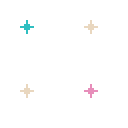
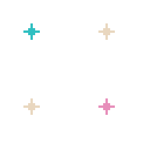
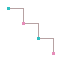

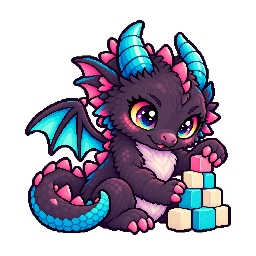
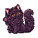
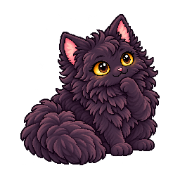
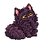
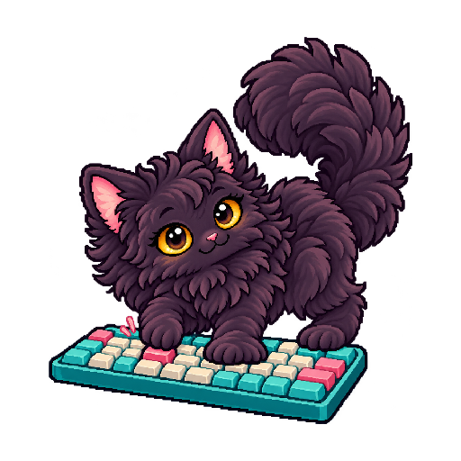
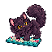
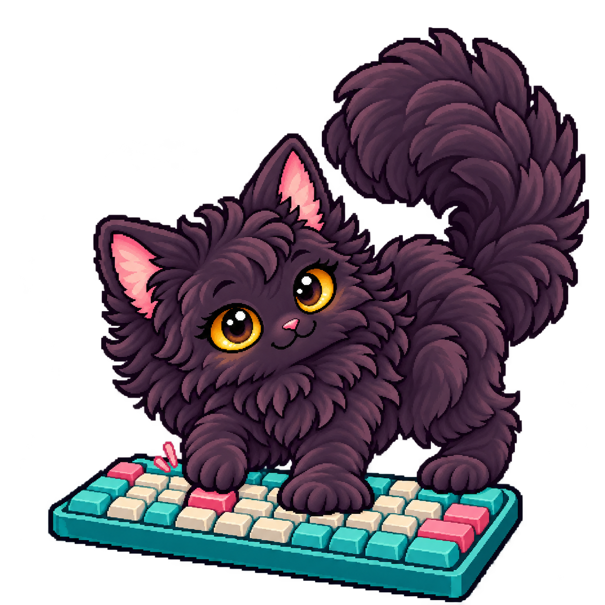
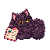
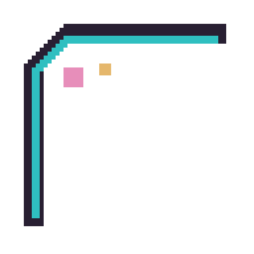
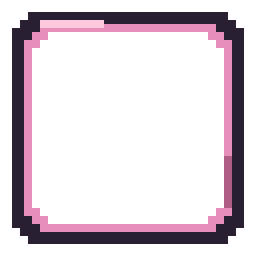
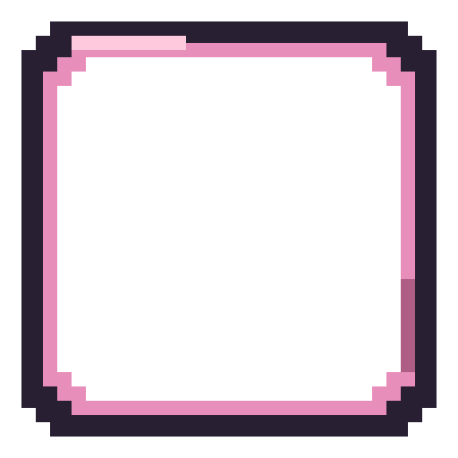
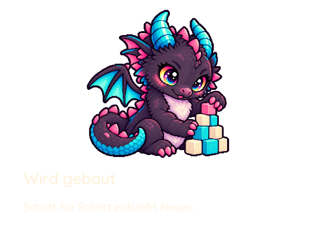
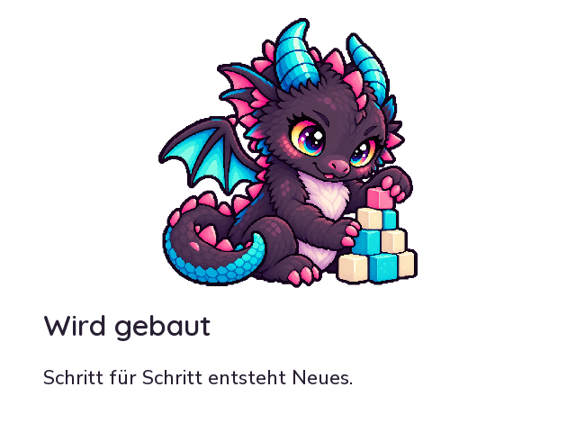
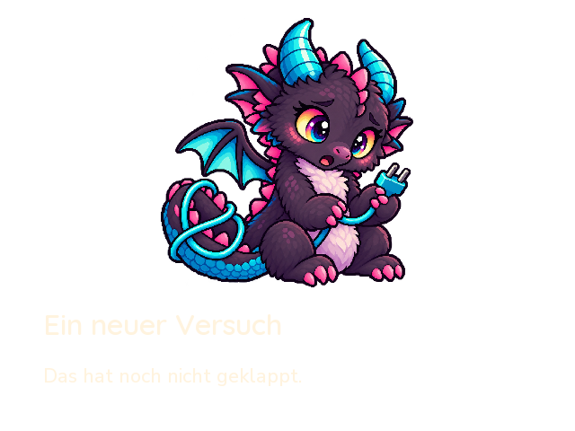
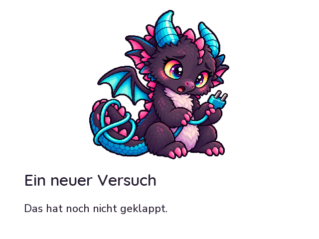
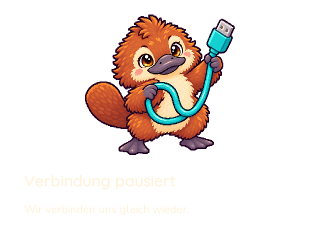
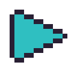
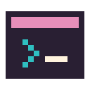
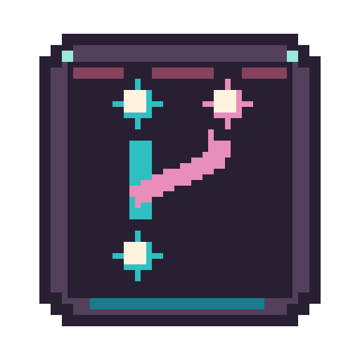
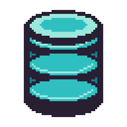
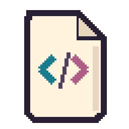
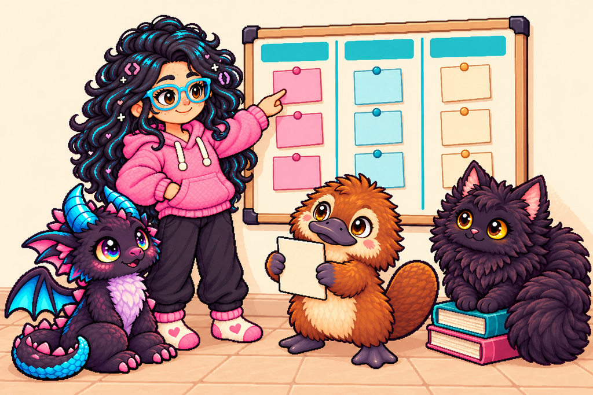
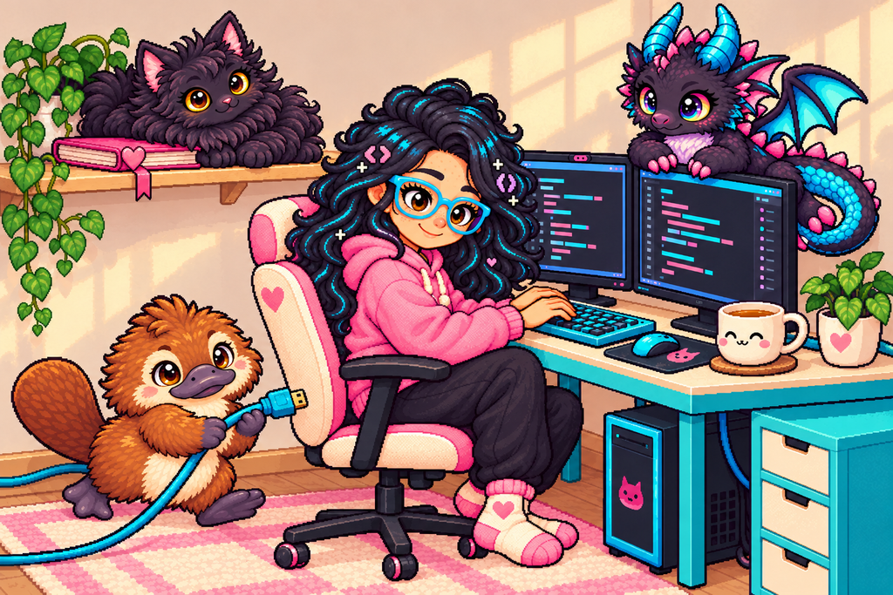


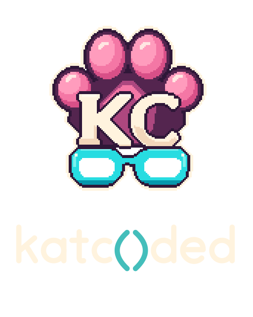


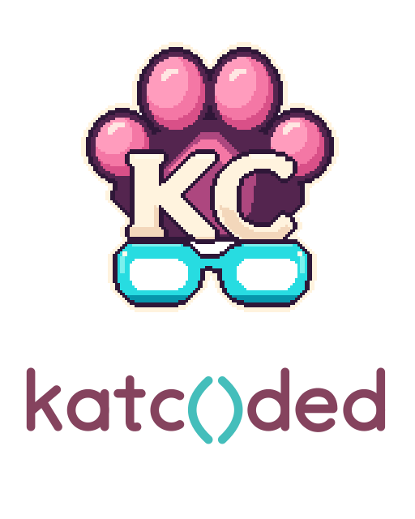

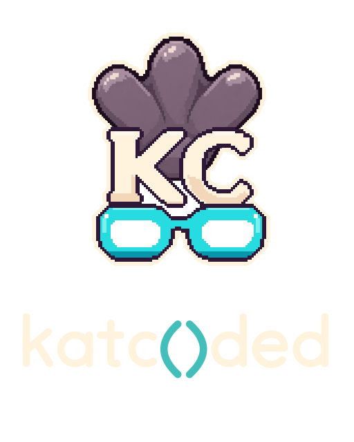


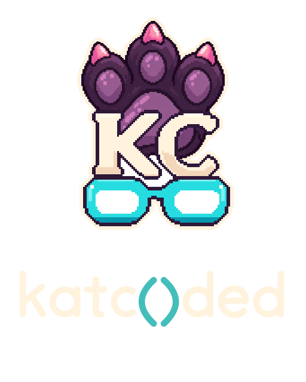